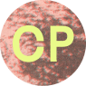

I sent a Google form to a few practicing designers & publishers to find out how making & publishing work can serve to build & maintain community.You can see & even submit your own answers tothe Google form here.
Luca, along with David Kasprzak, make up Colpa Press. Together they publish, design, print, & curate books & exhibitions. COLPA is based in the Mission District of San Francisco, CA.
MJ Balvanera is the creative director of the Feminist Center for Creative Work as well as Co-Conspirator Press in Los Angeles, CA. They work to cultivate the feminist creative community & practices.
Made up of Lexi Visco & Calvin Rocchio, Companion Platform is baed in Berkeley, CA & makes things in close collaboration with the communities & environments they live in.
Has making and publishing work connected you to or created communities you were not previously involved with or a member of?

Yeah, absolutely. I think publishing can be a way of building community. For us, we always start with something that we're very interested in. I often describe our publishing practice as as making elaborate fan zines. So whether there is an artist we want to work with, or whether it's a document of cultural ephemera like our rave flyer books or VHS books, we try to approach it from that perspective. Maybe this is sort of idealist, but I think that if you are genuinely interested in something and even a little fanatic you will most certainly connect with other people who are through the work that you do. When we talk to people about their work whether it's their collections or their art practice, we try to represent it as best we can and it often ends up expanding our community as a result of that. I mean essentially that is what community is, people that share a common interest or goal.
Absolutely! The very action of meeting new authors has been a hugely inspiring experience and has helped me understand different perspectives and voices. The publishing world is also an amazing community that is so welcoming and generous with the knowledge and space.
Yes, definitely! Our community print room project, P.E. Area, was an experiment in opening a publishing practice (and resources) up to a public, which inherently consisted of and connected us to communities we were incredibly fortunate to work with and maybe wouldn't have intersected with otherwise.
Does connecting to or engaging with a community of other people play a part your creative practice? If so, how would you define that part?
We couldn't imagine working any other way! We feel as though nothing can be made in isolation, as everything stems from an environment consisting of other perspectives and histories, both human and non-human.
It most certainly does. Like I said, most of our projects are born out of an interest in an artist's work or a collection of some sort. If it it's a collection we try to represent that community through an investigation of the cultural ephemera it produced. For example, with lo-budget and SOV horror films of the 80s and 90s the primary vehicle of distribution for these films was VHS. For many years, we have worked with our studio mate Mitsu Okubo in collecting a lot of these tapes and The Basement Tapes Vol.1 and 2 is a document of that effort and of our studio's collection. For the rave flyer series, it was about connecting with DJs, party promoters and ravers and sharing their experience through a collection of flyers, while highlighting the design of the flyers coming out of that experience. We are very much invested in both of these communities and we believe that leads to interesting publications.
It's always important to be a community player when leading a creative practice. Listening to others, hearing different perspectives, is vital to the continual growth of a creative practice. By learning from authors, editors, designers, printers, your creative practice is bound to shirt. Same goes with learning from other publishers. I'd define this part as a constant process by which you continually grow by learning from new communities.
How do you maintain a connection to the communities you are a member of?
It's especially hard to think about this during COVID, but keeping community alive is about holding space for one and other, sharing resources, opportunities and platforms, and maintaining dialogue in whatever format that can be.
As much as possible, through shared physical space, care, and support. We feel so thankful to live in a place where there are so many community spaces that support this kind of gathering.
Lately that has been through working serially, like with the VHS and rave flyer books but also by having prolonged relationships with artists. For example, we've made several books with local artist David Bayus and I think that our ongoing relationship has helped build an audience around his work. Then that audience becomes a part of our larger community. I also think that events, such as the NY and LA Art Book Fair, not only help us maintain a connection with our audience but also with our publishing peers. We participated in our first fair in 2013 and have done at least 2 or 3 every year and it has been a great way to connect with a larger community of publishers, Riso printers, and artists who make books. In a way, these events lay the framework for our network of art publishers which is extremely important for sharing ideas, techniques and new practices.